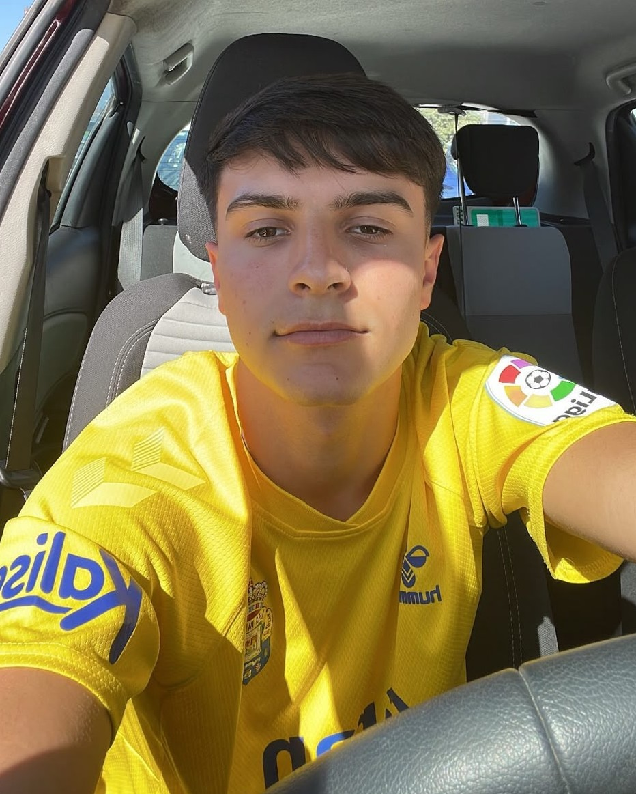
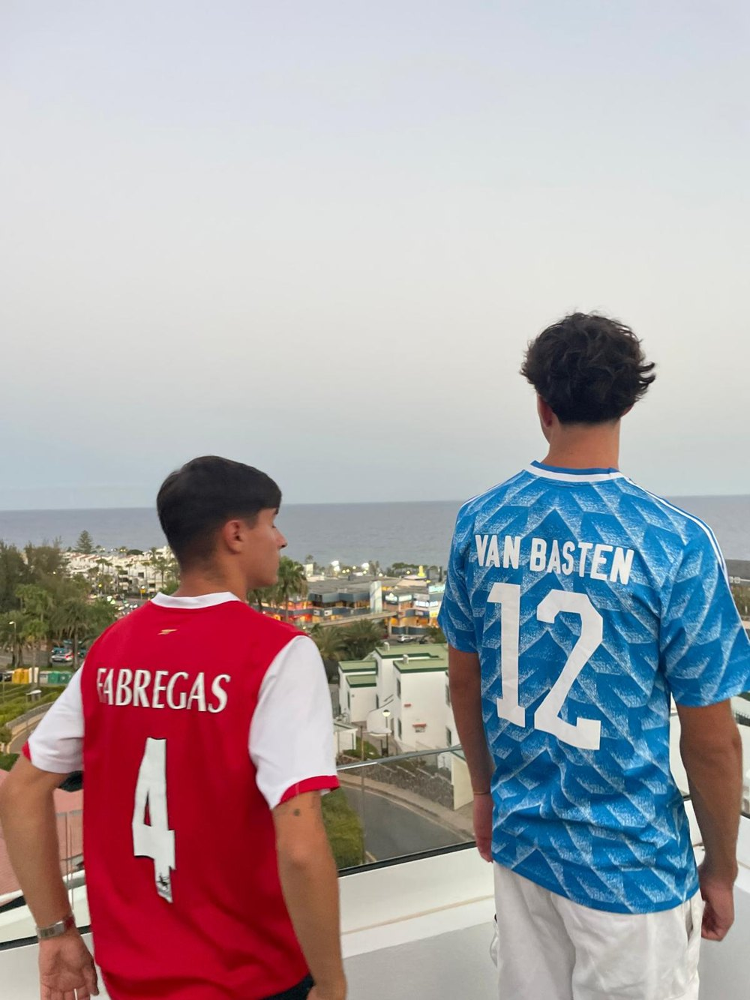
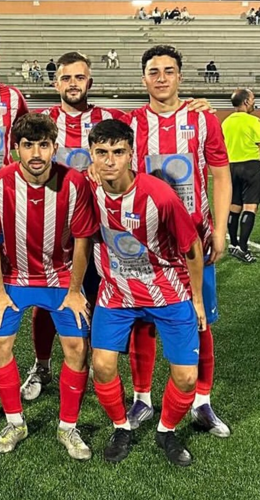

Del campo al banquillo: entrenar es mi forma de jugar.
Soy Carlos Gil Quevedo. Jugué al fútbol durante años y hoy me dedico a hacer mejores a los jugadores, dentro y fuera del campo.


El deporte siempre ha sido mi sitio.
Desde pequeño lo tuve claro: lo mío era estar en un campo. Jugué al fútbol muchos años y viví el juego desde dentro: la presión, el vestuario, lo que se siente al mejorar.
Ahora apuesto por el otro lado: entrenar. Dirijo a dos equipos, uno de ellos el UD San Antonio Pureza Femenino (3.ª RFEF), estudio Ciencias de la Actividad Física y del Deporte y unir la práctica con la ciencia es lo que me hace distinto.
Qué puedo hacer por ti
Texto de ejemplo. Cada servicio podrá tener su propia página cuando lo decidamos.
Campus de tonificación
Jornadas presenciales para trabajar cuerpo y mente con ejercicio guiado, en grupo y para todos los niveles.
Ver el campus →Tecnificación individual
Sesiones uno a uno para pulir técnica, toma de decisiones y confianza con el balón.
Cada pase tiene un porqué
- 01
Escuchar
Texto de ejemplo: parto de tu punto de salida y de lo que quieres conseguir.
- 02
Construir
Texto de ejemplo: base de fuerza, técnica y movilidad, paso a paso.
- 03
Progresar
Texto de ejemplo: subo la exigencia cuando estás listo, ni antes ni después.
- 04
Rematar
Texto de ejemplo: medimos el avance y celebramos el gol.
Un camino hecho a base de campo
Muchos años jugando al fútbol
Texto de ejemplo: categorías, clubes y lo que aprendí en cada etapa.
Entrenador UEFA C
Texto de ejemplo: año de obtención y lo que supuso dar el salto al banquillo.
Entrenador de dos equipos
Uno de ellos, el UD San Antonio Pureza Femenino, que compite en 3.ª RFEF.
Campus de tonificación
Mi próximo proyecto: llevar el entrenamiento a todo el que quiera moverse mejor.

Práctica y ciencia, juntas
Lo que sé del campo se apoya en lo que estudio en la universidad.
Licencia UEFA C
Titulación oficial de entrenador de fútbol.
Ciencias de la Actividad Física y del Deporte
Grado en curso: fisiología, biomecánica, entrenamiento. Universidad de La Laguna.
Formación continua
Cursos y congresos. Texto de ejemplo.
“Un buen entrenador no solo corrige: hace que el jugador quiera mejorar.”Frase de ejemplo · Carlos Gil Quevedo
¿Hablamos?
Cuéntame qué buscas y te respondo por WhatsApp.
WhatsApp+34 629 734 646
Instagram ZonaTenerife